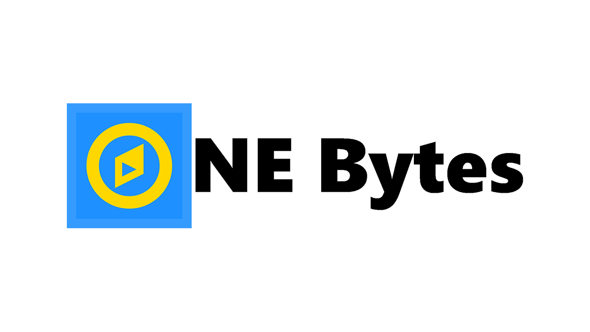
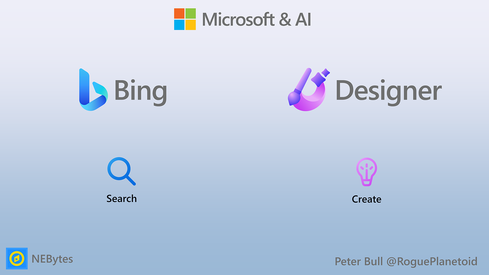

NEBytes March 2023
How to move from Manual Testing to Automated Testing with Postman - Ian Douglas
Postman can be used in the browser and is also an application, most features work in the free account but there are some paid features. Most people who get started with it are familiar with it being a HTTP client for testing an API where you can send a request out and get a response back, check if an API works and for testing. Can find out how to run tests and even automate this in the command line as part of a CI/CD pipeline.
In Postman once a structure of data that has come back you can validate what has come back, what the status code was along with how long it took to come back. When you first use Postman, you can see the query parameters for a Get request and the Body that can be provided for the Post request. There are also tests which can be a block of JavaScript code that will be called once a response has been received and can even create a Pre-request Script to do something beforehand if needed.
Postman for the tests has snippets to use to help build up tests such as expectations of the response that should be coming back, such as the status code being 200 and got a 201 instead for examples, once one test has failed the rest of the tests in JavaScript won't be run and you can also see if something in the response also has a value that you expect.
Postman uses the Chia JS library for tests and assertions. You can unpack the response and check for attributes and check lengths of values, along with error conditions and can have multiple tests within Postman in a collection within a workspace which can be for a bunch of requests to call an API then any collections can be synced to the Postman cloud. You can run all the tests for a collection with the collection runner including what requests you want to call, how many times to run it along with any delays and you can also inject file data into tests if needed. Postman will give a report of the tests that have been run and which tests have passed along with an overall status of the duration and average response time.
Postman allows you to run tests from the command line by using the unique identifier for the collection, you can also have variables resolved from a collection and there will be a unique identifier for the environment details that can be provided to allow variables to be resolved and you will also need an API key. Postman CLI is an official closed-source implementation but there is also an open-source library known as Newman which will continue.
Postman Command Line Interface (CLI) allows you to run and test Postman collections directly from the command line or terminal. You can login by providing an API key to the Postman CLI and then run a collection and provide the ID for collection and provide the environment id for the variables and this will run the tests in the collection and will output a report in the terminal including any tests that have failed. You can also customise the reports and Postman itself will contain any generated reports and allows this to be integrated into a DevOps or CI/CD pipeline.
Postman also allows you to set up a monitor from the collections to monitor a collection which is like a cron job where you can provide a name, tag, environment along with a data file to be provided to a test, then can provide how often you want to run it such as every week day or just one day of the week, or can run it every hour, two hours or more often and even run it every five minutes or 30 minutes and can then detect when an API call is not responding correctly and can have it email when there is a failure but can do this for so many failures so don't get inundated with emails. You can get started for free but will get more functionality in the paid plan.
Postman also allows you to design an API in Postman and even import a Swagger specification and can work on them within Postman for enterprise customers. There is a code generator to generate JavaScript, Python and others for a basic framework or scaffold for your API.
Postman also allows for test and automation to set up all sorts of CI/CD pipelines and can synchronise with code repositories and will also integrate with Azure Pipelines along with GitHub Actions and more. When you change your API Postman will run your CI/CD pipeline for you, so can initiate work from inside Postman or can synchronise the API through the pipelines and make sure are up-to-date with latest versions and Postman also supports other integrations for collections including what data to put into CI/CD pipeline.
Postman also supports flows which is a visual programming tool to create the requests you want to create to then do another thing once that request succeeds or fails, if it does then do something else and parse that response and do another request or if it fails to the log any response and helps those who aren't programmers to write the tests they need using a visual workflow to work with APIs and this uses AI to assist with the creation of the flow such as getting the information you need from a request or response and then pass that to another request if needed.
Postman primary use case is to run the tests for a collection and use this as a monitor to see a history of when those ran and then use the command line interface to run these and find out what ran or not can check for failure conditions you expect or ones that should pass and can write scripts around this to do more DevOps automation.
Microsoft & AI - Peter Bull
Search with Bing
Microsoft Bing is the search engine from Microsoft at bing.com and was first launched in 2009, although Microsoft had a search offering before then with Windows Live Search and MSN Search. When searching with Bing you can earn Microsoft Rewards that can be exchanged for gift cards, prize entries and more.
AI will fundamentally change every software category, starting with the largest category of all - search
AI is providing compelling content discovery and creation such as ChatGPT which was launched by OpenAI near the end of 2022. ChatGPT has proven popular and has changed the landscape of content creation and discovery by producing humanlike responses from a variety of prompts using a massive dataset.
ChatGPT allows you to get answers to questions and can create material based on human prompts. ChatGPT can remember what has been said in a conversation, allowing for clarifications and corrections but decline any requests deemed inappropriate. ChatGPT has limited knowledge of events after 2021 and can generate incorrect information, biased instructions or even harmful content. ChatGPT demonstrates the power of AI in an easy-to-use way on a wide range of topics such as to explain what ChatGPT is.
ChatGPT is part of the category of applications known as Generative AI that do not offer general search capabilities along with Jasper, Stability AI and others. Then there are search engines or content search such as Bing, Google, Amazon, YouTube and more. What if you could get the best of both worlds with Generative AI and Search? Bing brings together the best of Generative AI powered by GPT-4 from OpenAI but designed for Search which is then augmented and aided with AI.
Prometheus is a proprietary collection of capabilities and techniques from Microsoft using GPT-4 from OpenAI powering the latest AI features of Bing with improved relevance of results, up-to-date information along with annotated answers with citations and links. There is also an increased safety of results as Microsoft understands that AI is not like any other tool and requires principles to make sure it is used ethically and responsibly during training and at runtime and ensure the model is being engaged with more intelligently.
Prometheus leveraged the power of Bing and GPT-4 to iteratively generate a set of internal queries through the Bing Orchestrator to provide accurate and rich chat answers for a query within the context of a conversation. Prometheus selects the required internal queries and use the respective Bing results to provide relevant and up-to-date information, allowing it to answer topical questions, help reduce inaccuracies and the model reasons using data provided by Bing.
Prometheus was developed and tested using the OpenAI GPT-4 model itself to identify any potential risks and detect any illegal activities. The process took advantage of the model's capability to be a realistic conversation simulator, making it possible to conduct thousands of potentially harmful conversations to see how Bing would respond during development. This process also allowed Prometheus to be continuously tested with a wide range of conversations to see if it is doing the right thing, identify any defects and allow the system to be updated accordingly. This also allowed for a tight loop of testing, analysing and improvement, which led to significant innovations from the initial implementation along with assessing how current and relevant information was that was being returned.
Chat with Bing allows you to get the complete answers you are looking for. Chat with Bing allows you to ask complex questions and get better answers by providing more details, clarity and ideas with results that include citations and links that allow you to act on any responses or get creative inspiration with the benefits of Generative AI combined with the power of search. Chat with Bing supports three conversation styles which can be more Creative where responses are original and imaginative, creating surprise and entertainment or more Balanced where responses are reasonable and coherent, balancing accuracy and creativity in conversation and more Precise where responses are factual and concise, prioritising accuracy and relevancy.
Chat with Bing allows you to ask any question such as to explain the new Bing and any information is provided with links so you can see where information is coming from, so if there is something you're not sure of, or you need further details you can use the links to find out more. You can also access the new Bing from the taskbar search in Windows 11 allowing you to access the world's information and generate content from the Windows taskbar. Bing is also integrated in Skype where it can help you get answers, creative ideas or summaries in chat. Bing in Skype can provide helpful answers to your questions, whether you need a quick answer or something more in-depth along with being able to generate ideas or just have fun.
Microsoft Edge allows you to access the AI-features of Bing using Discover in the Sidebar. Microsoft Edge is the web browser by Microsoft from microsoft.com/edge and uses Chromium for rendering and is fully extendable with browser extensions. Microsoft Edge integrates with using Discover in the Sidebar where you can use Chat anywhere you are on the web, it is aware of the page or content you are looking at so you can use it to summarise or find out related information. Microsoft Edge also allows you to Compose content with Bing using Discover in the Sidebar. Microsoft Edge with Compose in Discover allows you to generate content using the right tone such as Professional, Casual, Enthusiastic, Informational and Funny then you can select the Format from Paragraph, Email, Blog Post or Ideas along with being able to set the length of short, medium or long to then generate a draft. Compose is a quick and simple way to generate and edit draft content and add it directly to any website or copy it to the clipboard.
Chat with Bing Demo
When will the world end? - There are many theories about when and how the world will end. Some scientists believe that the most likely scenario for the total annihilation of Earth is being engulfed into the Sun as it transforms into a 'red giant' star. This is estimated to happen in about 7.59 billion years1. However, there are also many other theories and predictions about the end of the world, some of which are based on religious or mystical beliefs rather than scientific evidence. Ultimately, no one can say for certain when or how the world will end.
Create with Microsoft Designer
Microsoft Designer is an online designer at designer.microsoft.com where you can create stunning designs quickly using templates and you can upload your own media, access visuals such as graphics, include text or pick from a variety of styles and is currently available in early access.
AI is provides ways to generate realistic images and art using natural language with DALL·E which was first launched by OpenAI in 2021 and updated in 2022 to DALL·E 2 allowing it to generate more realistic and accurate images with greater resolution. DALL·E allows you to create realistic looking images where you can combine concepts, attributes and styles by describing the image you want with a text description. DALL·E makes it easy for anyone to create an image using a detailed description such as asking for a painting of a robot in the style of Leonardo DaVinci.
Bing also allows you to create images with your words with the Bing Image Creator. Bing Image Creator can be used in Chat with Bing or used directly at bing.com/create. Bing Image Creator is powered by an advanced version of the DALL·E model from OpenAI. Boosts can be used to speed up image creation and but you can get more from Microsoft Rewards. Bing Image Creator can be used directly to generate AI-powered images and will also be integrated into Microsoft Edge, or you can generate visual and written content together in Chat with Bing.
Microsoft Designer also allows you to create an image from a description leveraging the power of DALL·E 2 which can be used in combination with the Designer Copilot which is an AI system from Microsoft that can generate visual, customisable designs based on a text description. Microsoft Designer allows you to start with an AI-generated image for a design you would like to create by typing in the description of the image or to help inspire there are examples of what to ask for. Microsoft Designer allows you to create content using Designer Copilot where you can describe the design you want and Microsoft Design allows you to start with an AI-generated image using a description such as Robot St Valentine in the style of Picasso. You can then customise a design or keep it as-is, reducing the workload as well as any design skills needed to get the results you want by using AI to get started.
Microsoft Designer Demo
Create an icon for NEBytes
A queue of people lining up for a ferris wheel at Piccadilly Circus in the style of Calvin and Hobbes
Microsoft 365 Copilot
Microsoft 365 will be enhanced in the future using AI with Microsoft 365 Copilot, which will go beyond Clippit aka Clippy from "It looks like you're writing a letter" to helping you write a letter instead. Microsoft 365 Copilot will turn your words into a powerful and productive co-pilot within Word, PowerPoint, Excel, Outlook, Teams and more along with Business Chat where you can ask for summaries, found out more and pull together information from Microsoft 365.
Future
Microsoft has more AI-powered experiences coming in the future including GitHub Copilot X which evolves workflow with chat, voice and more for developers or Microsoft Security Copilot which empowers defenders to detect patterns, harden defences, respond to incidents and more for cyber security professionals.
Summary
Bing shows the power of AI to deliver improved Search and introduce Chat along with integration with Microsoft Edger and Microsoft Designer shows how you can Create designs using a description of what you want and in the future Microsoft 365 Copilot will help reinvent productivity powered by Microsoft & AI.